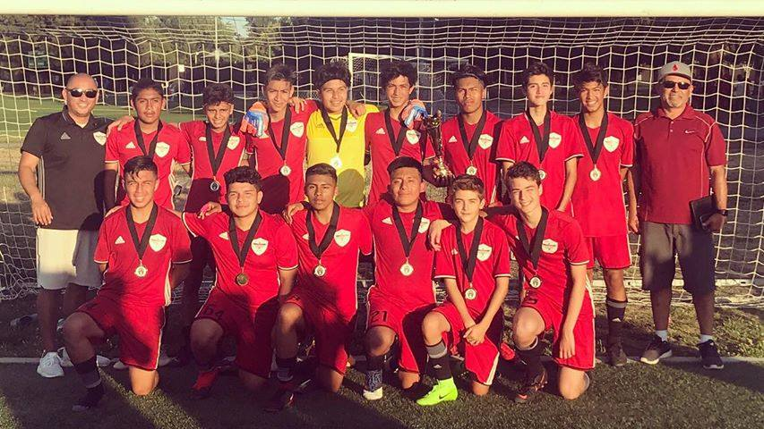
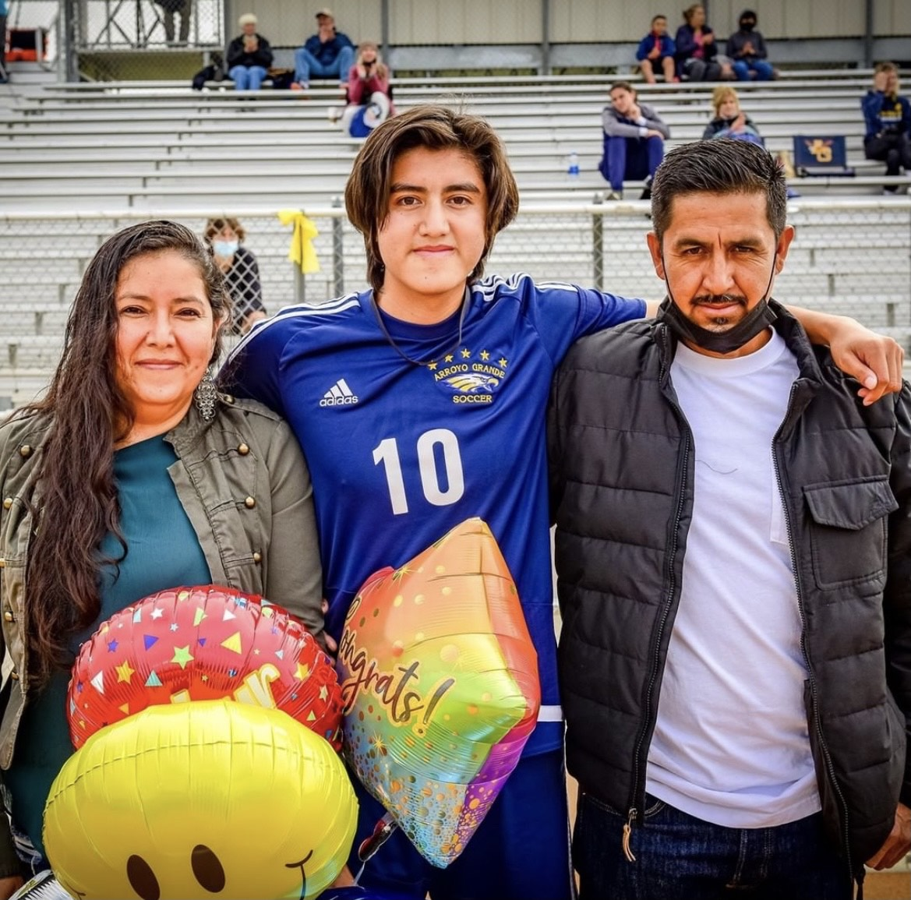
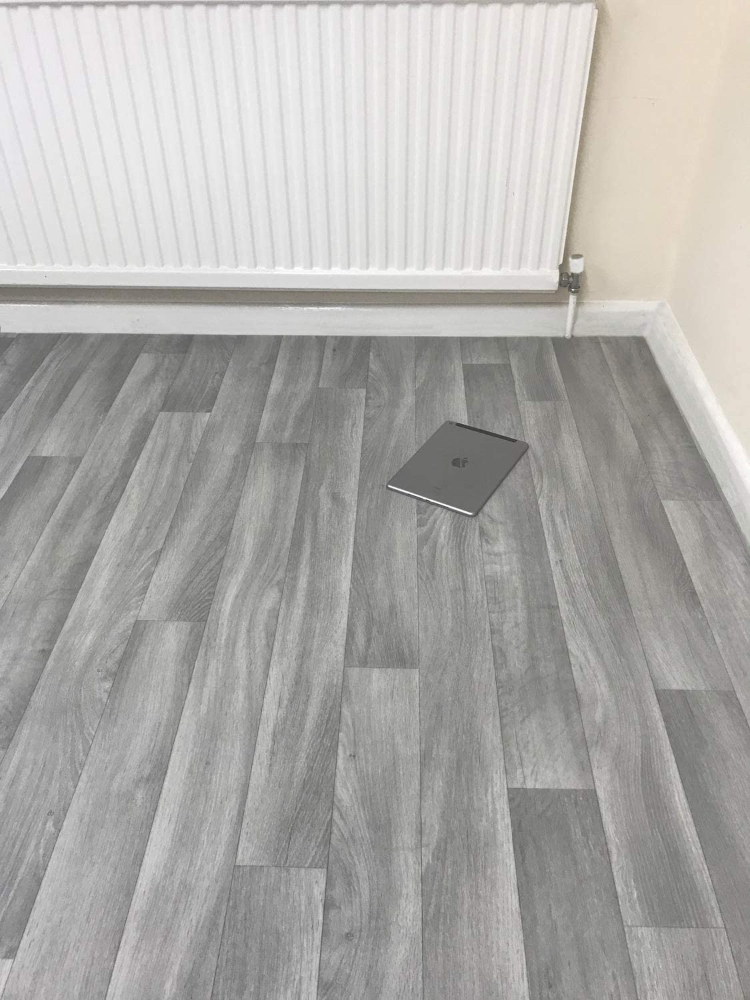
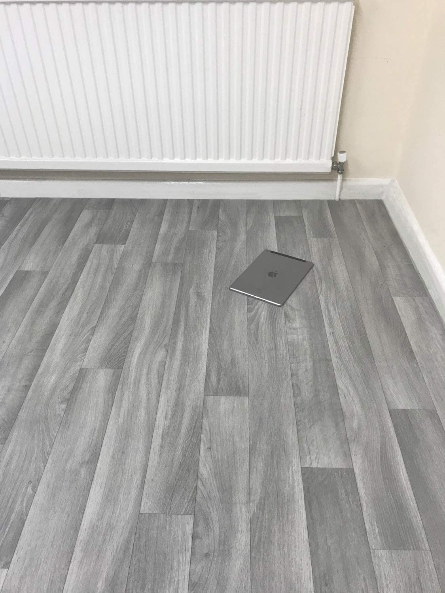

Portfolio





My name is Juan Munoz, I grew up in Arroyo Grande in the San Luis Obispo county. I am currently 19 years old persuing an education in Business Administration at the California University of Riverside. My favortite hobbies are playing soccer on the weekend, working out, and playing video games.
I have experience working in manual labor like construction and landscaping. I worked closely with my father on projects like pouring concrete, painting, yard remodeling, floor remodeling, and gardening. Each job holds a different experience in which I gained proper working etiquette . Physical labor like mixing concrete by hand requires not only endurance but a strong mental. I have learned to take my tasks one step at a time so that I do not burn myself out during an 8 hour day. As a laborer, I learned to efficiently follow directions and execute them as fast and best to my abilities. I also learned the value of precision and delicacy. When taking measurments it is important to be accurate so that the rest of the job is not affected by one mistake. During my time working in landscape and construction I picked up many habits that have increased my vaulue as an employee.
• Unload and carry material
• fetch any tool or material needed
• use power tools
•Commited to organized club soccer for 12 years
•Team Capitan
• State Cup finalists and many tournament championships